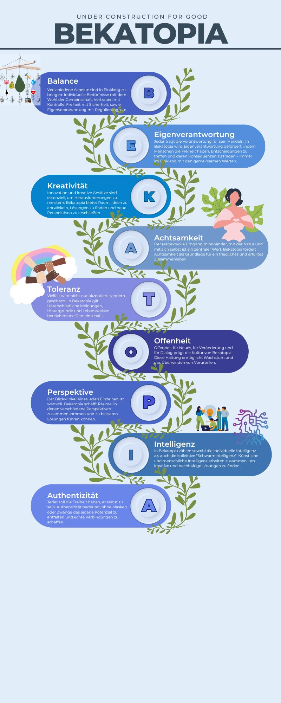

Dank an alle, die Bekatopia möglich gemacht haben
Bekatopia wäre ohne die Unterstützung und Inspiration vieler Menschen und Institutionen nicht denkbar.
Doch vor allem gilt mein Dank allen, die mich zu dem Menschen gemacht haben, der ich heute bin, und damit indirekt auch zu dieser Vision beigetragen haben:
- Meine Familie, Freunde und Bekannten, die mich begleitet, unterstützt, kritisiert und inspiriert haben.
- Lehrer:innen, Ausbilder:innen und Mentor:innen, die mir Wissen und Werte vermittelt haben.
- Berühmten Persönlichkeiten, die mir als Vorbilder oder auch als abschreckende Beispiele gedient haben.
- Künstler:innen, deren Werke – seien es Lieder, Bücher, Filme oder andere Kunstformen – mir neue Perspektiven eröffnet und mich inspiriert haben.
- Fremde, die meine Wege gekreuzt und durch ihre Worte oder Taten mein Denken beeinflusst haben.
- Institutionen, Organisationen und Systeme, die sich der Optimierung von Gemeinschaften widmen und deren Ideen Bekatopia beeinflusst haben.
Letztendlich danke ich jedem Menschen, denn jeder Einzelne hat direkt oder indirekt Einfluss auf mich, auf meine Umwelt und auf die Faktoren genommen, die diese Vision von Bekatopia geformt haben.
Du möchtest helfen? Dann melde Dich unter b-k-s@gmx.net